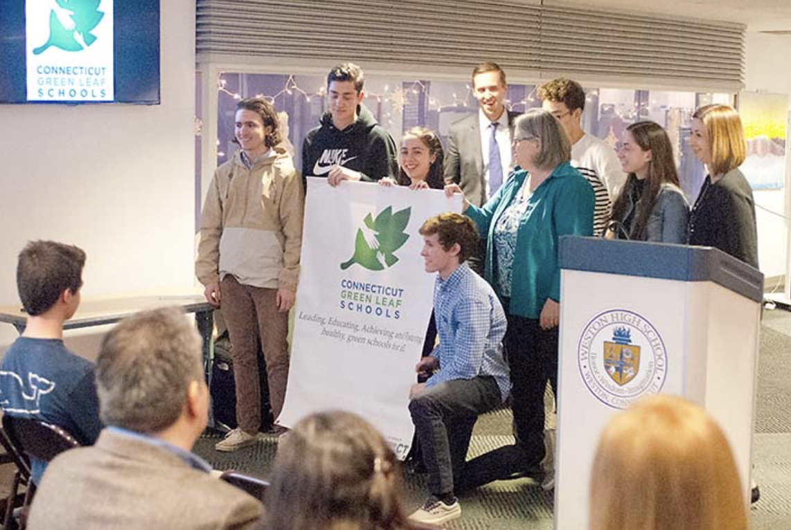

Climate Reality Project

I have worked with the Climate Reality Project for 3 years now as a Climate Activist. Since attending my first Climate Reality Conference ran by Al Gore in 2018, I have presented on several stages about climate change and its devastating impacts on our planet.
Green Leaf Schools
I also led my high school environmental club in obtaining the Green Leaf Schools Award (U.S. Board of Education Award). We then went on to receive national recogniction for my clubs efforts.